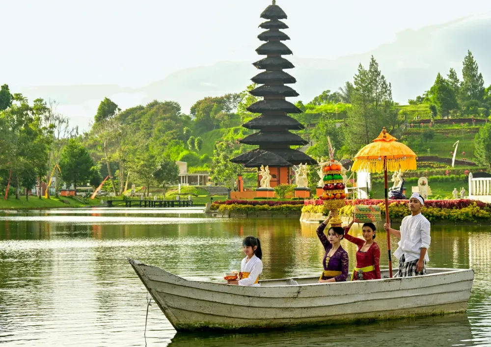

Partnerbijdrage
De kunst van het plannen: creëer jouw droomreis naar Azië
Gepubliceerd op 27 mei 2026
Droom je weleens van witte zandstranden, eeuwenoude tempels en bruisende steden vol geuren en kleuren? Een reis naar Azië spreekt tot de verbeelding, maar de gedachte aan de planning kan soms overweldigend zijn. Met een goede voorbereiding wordt het plannen echter net zo’n groot avontuur als de reis zelf. Het is de eerste stap naar een onvergetelijke ervaring.
Een zorgvuldige planning zorgt ervoor dat je ter plaatse volop kunt genieten zonder je zorgen te maken over de volgende stap. Het geeft je de vrijheid om spontaan te zijn, omdat de basis al is gelegd. Laten we eens kijken hoe je jouw droomreis naar dit fascinerende continent kunt vormgeven.
Waar begin je met de voorbereiding?
Alles begint met een keuze: waar wil je naartoe? Azië is enorm divers. Zoek je de rust van Balinese rijstvelden, de hectiek van Bangkok of de ongerepte natuur van Vietnam? Onderzoek de verschillende landen en bepaal wat het beste past bij jouw wensen. Houd ook rekening met de beste reistijd; het regenseizoen kan je plannen behoorlijk beïnvloeden.
Zodra je een bestemming hebt gekozen, is het tijd om naar je budget te kijken. Bepaal een realistisch dagbudget voor accommodatie, eten, transport en activiteiten. Door dit vooraf in te schatten, voorkom je verrassingen. Vliegtickets zijn vaak de grootste uitgave, dus boek deze op tijd en vergelijk verschillende luchtvaartmaatschappijen voor de beste deal.
De perfecte reisroute samenstellen
Een goede reisroute is de ruggengraat van je avontuur. Het is de kunst om een balans te vinden tussen de iconische bezienswaardigheden en de minder bekende plekken waar je het echte lokale leven ervaart. Probeer niet te veel in een korte tijd te proppen. Reizen is geen race; neem de tijd om een plek echt te ervaren en te absorberen.
Denk na over het reistempo dat bij je past. Wil je elke twee dagen van locatie wisselen of liever een week op één plek blijven? Dit bepaalt de logistiek van je reis. Voor landen met een grote diversiteit aan eilanden en landschappen kan een goed uitgestippelde route een wereld van verschil maken. Een complete Rondreis Indonesie helpt je bijvoorbeeld om de hoogtepunten van de archipel te combineren zonder logistieke stress.
Dompel je onder in de lokale cultuur
Een reis wordt pas echt bijzonder als je je openstelt voor de lokale cultuur. Dit gaat verder dan het bezoeken van toeristische attracties. Het gaat om de interactie met de bevolking, het proeven van de authentieke keuken en het begrijpen van lokale tradities. Wees nieuwsgierig en toon respect, en je zult merken dat deuren opengaan die anders gesloten blijven.
Er zijn veel manieren om je onder te dompelen in de cultuur. Hier zijn een paar eenvoudige tips:
- Leer een paar basiswoorden in de lokale taal. Een simpele ‘hallo’ of ‘dank je wel’ wordt enorm gewaardeerd.
- Proef de lokale keuken op straatmarkten en in kleine eettentjes. Hier vind je vaak de lekkerste en meest authentieke gerechten.
- Bezoek een tempel of een lokaal festival voor een uniek inzicht in de spiritualiteit en tradities.
- Respecteer lokale gewoonten en kledingvoorschriften, vooral bij het bezoeken van religieuze plekken.
Landen met een diepgewortelde cultuur bieden eindeloze mogelijkheden voor verrijking. Een goed georganiseerde Rondreis Thailand kan je bijvoorbeeld meenemen langs indrukwekkende tempelcomplexen en kleurrijke markten, waardoor je de ziel van het land echt leert kennen.

Praktische tips voor een zorgeloze reis
Een goede voorbereiding omvat ook de praktische zaken. Controleer ruim van tevoren of je een visum nodig hebt voor je bestemming en of je paspoort nog lang genoeg geldig is. Informeer bij de GGD of je huisarts naar de aanbevolen vaccinaties en sluit een goede reisverzekering af die past bij de activiteiten die je van plan bent te ondernemen.
Pak slim in door te kiezen voor lichte kleding in laagjes en laat overbodige spullen thuis. Zorg dat je kopieën van je belangrijke documenten hebt, zowel digitaal als op papier. Regel je bankzaken, zoals het activeren van je pinpas voor wereldwijd gebruik, en neem voor de zekerheid ook een creditcard mee.
Jouw avontuur wacht op je
Het plannen van een reis naar Azië is een opwindend proces dat de voorpret alleen maar vergroot. Door een duidelijke route te combineren met flexibiliteit, je te verdiepen in de cultuur en de praktische zaken goed te regelen, leg je de basis voor een onvergetelijke ervaring. Het avontuur begint niet op het vliegveld, maar op het moment dat je besluit te gaan.
Waar wacht je nog op? Open die wereldkaart, laat je inspireren en begin vandaag nog met het plannen van de reis waar je altijd al van hebt gedroomd. De wonderen van Azië liggen binnen handbereik.
Terug naar de beginpagina